|
Dado el rectángulo ABCD, con a =AB (base), b = BC (altura) y a>b, desde la base AB se construye internamente el triángulo equilátero ABX, y desde la altura BC se construye exteriormente un triángulo equilátero BCY. Las rectas AX y BY se cortan en Z. Se pide : a) Hallar la relación entre la base y la altura del rectángulo para que los puntos X, C e Y, estén alineados. b) Caracterizar y calcular en ese caso todos los elementos significativos (lados, ángulos, medianas, bisectrices interiores y exteriores, radio inscrito y radio circunscrito) del triángulo XYZ. |
|
Propuesto por Juan Bosco Romero Márquez
|
Solución de Francisco Javier García Capitán
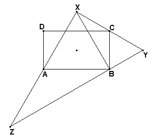
a) La figura muestra la situación en la que los puntos X, C e Y, están alineados. TenemosÐCYB = 60º,
ÐYBX = ÐYBC
+ ÐCBX = 60º + (90º-60º)
= 90º.
ÐBXY = 180º -
ÐCYB - ÐYBX
= 180º - 60º -
90º = 30º. Entonces,
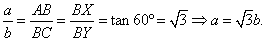
b) Elementos del triángulo XYZ.
Ángulos: ÐX=90º, ÐY =60º y ÐZ=30º.
Lados: Tenemos y=ZX = 2 BX = 2 AB = 2a =
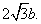
. Asimismo z = XY = 2 BY = 2 BC = 2b y x = YZ = 2 XY = 4b. (AC es la paralela media a YZ en el triángulo XYZ, y también una de las diagonales del rectángulo).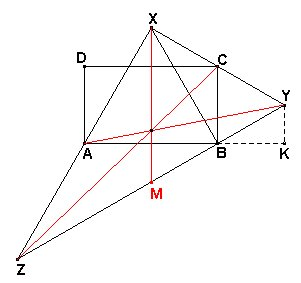
Medianas. Una de las medianas del triángulo XYZ es XM = XY = 2b. Para las otras en lugar de usar la fórmula para la mediana a partir de los tres lados usamos la figura y el teorema de Pitágoras: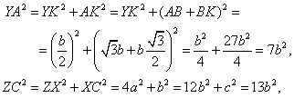
de donde
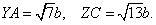
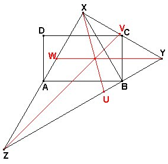
Bisectrices interiores. La bisectriz YW forma el triángulo rectángulo XYW semejante a XZY. Entonces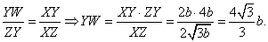
En el triángulo XYU formado por la bisectriz XU tenemos ÐXYU = 60º, ÐXUY = 75º, de manera que si usamos el teorema de los senos,
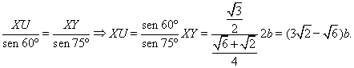
Finalmente, en el triángulo XZV formado por la bisectriz ZV, tenemos ÐZXV =90º, ÐXZV = 15º, de manera que
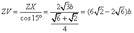
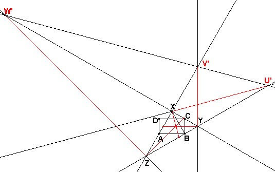
Bisectrices exteriores. Seguimos haciendo cálculos sin usar fórmulas generales. En su lugar usamos los valores concretos del problema.Al trazar la bisectriz exterior XU' obtenemos ÐXU'B=ÐXU'Z = 15º. Entonces, XU' = BX / sen(15º). Operando resulta
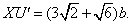
Al trazar la bisectriz exterior YV' obtenemos el triángulo XYV' igual al triángulo XYZ, por lo que YV' = YZ = 4b.
La bisectriz exterior ZW' puede hallarse con ayuda del triángulo rectángulo ZXW' en el que ZW'X = 15º. Entonces tendremos ZW' = ZX / sen(15º) = 2 XU'. Entonces
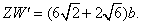
Radio inscrito. El radio de la circunferencia inscrita en un triángulo rectángulo XYZ rectángulo en X es
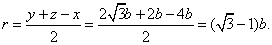
Radio circunscrito. El radio de la circunferencia circunscrita a XYZ es la mitad de la hipotenusa, R=2b.